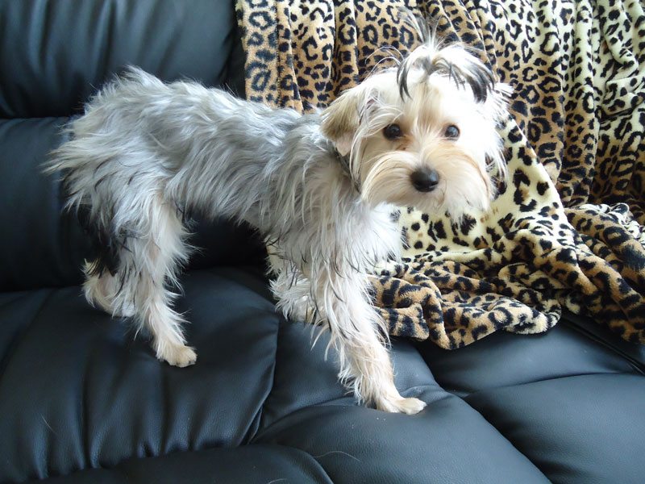
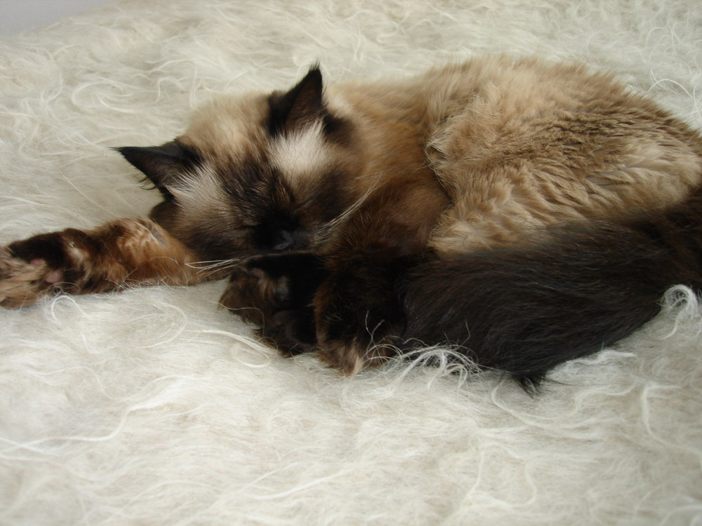
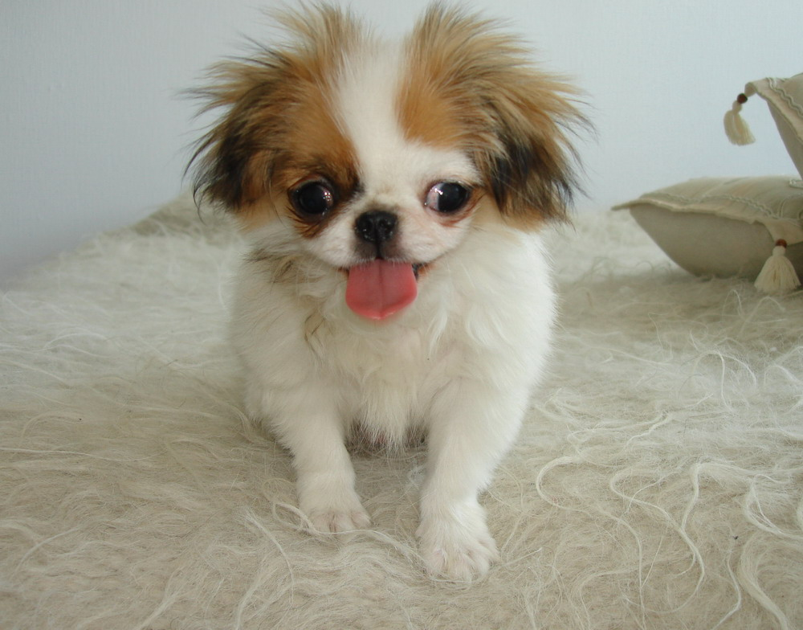
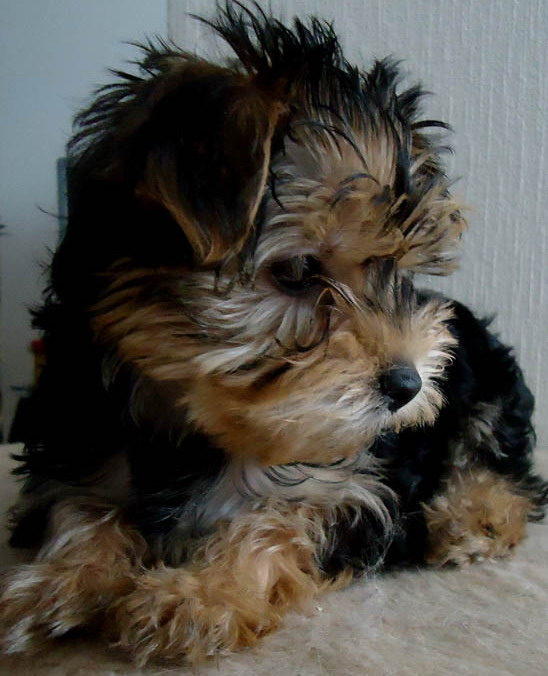
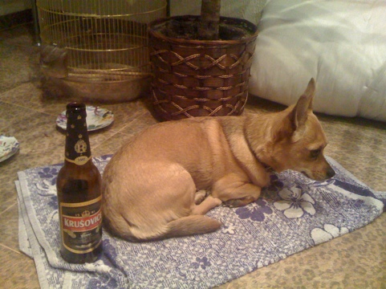

Первое получение коллекции портов
#portsnap fetch
#portsnap extract
Последующие обновления
#portsnap fetch update
Первое получение коллекции портов
#portsnap fetch
#portsnap extract
Последующие обновления
#portsnap fetch update

Клеопатра, Барселона, Йоки
по старшинству



Подключение дисков без правки /etc/fstab
cat /etc/rc.mount
/sbin/mount /dev/ad0s1d /media0
/sbin/mount /dev/ad1s1d /media1
Подключение папок из произвольного диска в нужную папку (для ftp например)
cat /etc/rc.mount
mount_nullfs /media2/Video1/ /ftp/Video/АБВ
mount_nullfs /media7/AudioBooks/ /ftp/AudioBooks
Наконец-то запустил новый сайт http://www.vipbook.kiev.ua. Было интересно делать - кучу новых технологий использовал и новый подход к дизайну. Делал долго - но теперь даже самому нравится.
Ищет хозяина, потерялась 10-11 февраля в районе жд-вокзала Киев-московский. В ошейнике. 
P.S. Собаку в итоге назвали Зидан. И пришлось найти ей нового хозяина - с нашей кошкой, Клеопатрой, они категорически не нашли общий язык. Пожил у нас полторы недельки, и мы к нему уже привыкли и он к нам... Но пришлось отдавать.
{kind=link}
{kind=link}
{kind=link}
{kind=link}
{kind=link}